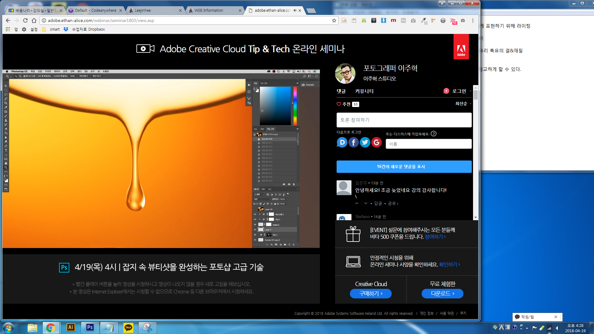

뷰티 아이템 촬영의 기초와 핵심
럭셔리하고 몽환적인 분위기의 배경 만들기
흐르는 방울 및 리퀴드 표현 및 합성 방법
어려워도 피할수 없는 리퀴드 촬영과 리터칭 기술
수분감 팡팡 터지는 이미지를 위한 물 모양 합성 방법
<img src="img.jpg" height="300" alt="산 이미지" title="산 이미지">
| 이름 | 성별 | 주소 | 회비 |
|---|---|---|---|
| 최진혁 | 남 | 서울 | 1000 |
| 최유빈 | 여 | 500 | |
| 합계 | 1500 | ||
<table border="2">
<thead>
<tr>
<th>이름</th>
<th>성별</th>
<th>주소</th>
<th>회비</th>
</tr>
</thead>
<tbody>
<tr>
<td>최진혁</td>
<td>남</td>
<td rowspan="2">서울</td>
<td>1000</td>
</tr>
<tr>
<td>최유빈</td>
<td>여</td>
<td>500</td>
</tr>
</tbody>
<tfoot>
<tr>
<td colspan="3">합계</td>
<td>1500</td>
</tr>
</tfoot>
</table>
<form action="#">
<p>아이디 : <input type="text" name="id"></p>
<p>비밀번호 : <input type="password" name="pwd"></p>
<p>주소 : <input type="text" name="address"></p>
<input type="submit">
</form>
<form action="#">
<p>text : <input type="text" name="id" value="default value"></p>
<p>password : <input type="password" name="pwd" value="default value"></p>
<p>textarea :
<textarea cols="50" rows="2">default value</textarea>
</p>
</form>
<form action="#">
<h5>색상</h5>
<select name="color">
<option value="red">붉은색</option>
<option value="black">검은색</option>
<option value="blue">파란색</option>
</select>
<h5>색상2 (다중선택)</h5>
<select name="color2" multiple>
<option value="red">붉은색</option>
<option value="black">검은색</option>
<option value="blue">파란색</option>
</select>
<input type="submit">
</form>
<form action="#">
<p>
<h5>색상 (단일선택)</h5>
붉은색 : <input type="radio" name="color" value="red">
검은색 : <input type="radio" name="color" value="black" checked>
파란색 : <input type="radio" name="color" value="blue">
</p>
<p>
<h5>사이즈 (다중선택)</h5>
95 : <input type="checkbox" name="size" value="95">
100 : <input type="checkbox" name="size" value="100" checked>
105 : <input type="checkbox" name="size" value="105" checked>
</p>
<input type="submit">
</form>
<form action="#">
<input type="text">
<input type="submit" value="전송">
<input type="button" value="버튼" onclick="alert('hello world')">
<input type="reset">
</form>
<form action="#">
<input type="text" name="id">
<input type="hidden" name="hide" value="hello"> - 눈에 보이지 않지만 제출 버튼을 누르면 서버에 전송되는 값
<input type="submit">
</form>
<form action="#">
<p>
<label for="id_txt">text :</label>
<input id="id_txt" type="text" name="id" value="default value">
</p>
<p>
<label for="password">password :</label>
<input id="password" type="password" name="pwd" value="default value">
</p>
<p>
<label>
<input type="checkbox" name="color" value="red">붉은색
</label>
<label for="color_blue">
<input id="color_blue" type="checkbox" name="color" value="blue">파란색
</label>
</p>
</form>
html코드를 의미론적으로 타당한 태그로 설명하는 것이 검색엔진 최적화의 기본입니다.
언어라는 공통분모를 가지고 각각의 다른 환경을 제어하게 되는데 환경에 따라서 그 환경이 할 수 있는 일이 다르고 할 수 있는 일에 따라서 명령하기 위한 명령어가 각각 다릅니다.
<script>
alert('Hello world');
</script>
큰 따옴표로 시작하면 큰 따옴표로 끝나야하고, 작은 따옴표로 시작하면 작은 따옴표로 끝나야 합니다. String이라고 합니다.
<script> //실습 var a = 1; alert(a+1); //2 var a = 2; alert(a+1); //3 </script>
<script> var first = "coding"; alert(first+" everybody"); </script>
//ex) 변수가 없다면 <script> alert(100+10); alert((100+10)/10); alert(((100+10)/10)-10); alert((((100+10)/10)-10)*10); </script>
//ex) 변수 사용 <script> a = 100; //변수를 바꾸면 나머지 로직에 대입되는 변수의 값이 모두 바뀝니다. a = a + 10; alert(a); //110 a = a / 10; alert(a); //11 a = a - 10; alert(a); //1 a = a * 10; alert(a); //10 </script>
a(변수)=(대입'연산자') 1(상수)
== : 동등연산자(Equal Operator)는 좌항과 우항을 비교해서 서로 값이 같다면 true 다르다면 false가 됩니다.
<script>
alert(1==2) //false
alert(1==1) //true
alert("one"=="two") //false
alert("one"=="one") //true
</script>
=== : 일치연산자(Strict Equal Operator)는 좌항과 우항이 '정확'하게 같을 때 true 다르면 false가 됩니다.
<script> alert(1=='1'); //true alert(1==='1'); //false </script>
서로 같은 수를 표현하고 있더라도 데이터 형이 같은 경우에만 같다고 판단하기 때문입니다. == 연산자 대신 === 연산자를 쓰는 것을 강력하게 권합니다.
<script> alert(null == undefined); //true alert(null === undefined); //false alert(true == 1); //true alert(true === 1); //false alert(true == '1'); //true alert(true === '1'); //false alert(0 === -0); //true alert(NaN === NaN); //false </script>
true와 false는 블린(boolean)이라고 불리는 데이터 형식입니다.
NaN은 0/0과 같은 연산의 결과로 만들어지는 특수한 데이터 형인데 숫자가 아니라는 뜻입니다.
참고 : http://dorey.github.io/JavaScript-Equality-Table/(==과 ===의 차이점)
'!'는 부정을 의미합니다.
//ex)아래 예제의 실행결과는 'reselt:true'다. if 뒤에 true가 왔기 때문이다.
<script>
if(true){
alert('result : true');
}
</script>
//ex)다음 예제는 아무것도 출력하지 않을 것이다. if 뒤에는 false가 왔기 때문이다.
<script>
if(false){
alert('result : true');
}
</script>
//ex)다음 예제를 보자. 결과는 12345를 출력 할 것이다.
<script>
if(true){
alert(1);
alert(2);
alert(3);
alert(4);
}
alert(5);
</script>
//ex)다음 예제를 . 결과는 5만 출력될 것이다.
<script>
if(false){
alert(1);
alert(2);
alert(3);
alert(4);
}
alert(5);
</script>
else 예시
//ex)결과는 1이다.
<script>
if(true){
alert(1);
} else {
alert(2);
}
</script>
//ex)결과는 2이다.
<script>
if(false){
alert(1);
} else {
alert(2);
}
</script>
else if 예시
//ex)결과는 2이다.
<script>
if(false){
alert(1);
} else if(true) {
alert(2);
} else if(true) {
alert(3);
} else {
alert(4);
}
</script>
//ex)결과는 3이다.
<script>
if(false){
alert(1);
} else if(false) {
alert(2);
} else if(true) {
alert(3);
} else {
alert(4);
}
</script>
//ex)결과는 4이다.
<script>
if(false){
alert(1);
} else if(false) {
alert(2);
} else if(false) {
alert(3);
} else {
alert(4);
}
</script>
아래의 내용에서 prompt() 구문은 사용자가 입력한 값을 가져와서 id 변수의 값으로 대입한다.
이러한 것을 API 또는 함수라고 부른다. 사용자가 입력한 값이 egoing이라면 '아이디가 일치 합니다'를 출력하고 그렇지 않다면 '아이디가 일치하지 않습니다'를 출력한다.
<html>
<head>
<meta charset="UTF-8">
</head>
<body>
<script>
var id = prompt ('아이디를 입력해주세요.');
if(id == 'egoing'){
var password = prompt('비밀번호를 입력해주세요');
if(password == '111111'){
alert('로그인 하셨습니다.' +id+님 반갑습니다.);
} else {
alert('비밀번호가 다릅니다.');
}
} else {
alert('아이디가 일치하지 않습니다.');
}
</script>
</body>
</html>
<html>
<head>
<meta charset="UTF-8">
</head>
<body>
<script>
var id = prompt ('아이디를 입력해주세요.');
var password = prompt('비밀번호를 입력해주세요');
if(id == 'egoing' && password === '111111'){
alert('로그인 하셨습니다.' +id+'님 반갑습니다.');
} else {
alert('아이디가 일치하지 않습니다.');
}
</script>
</body>
</html>
//ex)다음 예제를 보자. 결과는 1이다.
<script>
if(true && true){
alert(1);
}
if(true && true) {
alert(3);
}
if(false && false) {
alert(4);
}
</script>
//ex)다음 예제를 보자. 결과는 1,2,3이 출력된다. 마지막 조건문의 '||'는 좌항과 우항이 모두 false이기 때문에 false가 된다.
<script>
if(true | | true){
alert(1);
}
if(true | | false) {
alert(2);
}
if(false && true) {
alert(3);
}
if(false && false) {
alert(4);
}
</script>
//ex)아래의 결과는 4다.
<script>
if(!true && !true){
alert(1);
}
if(!false && !true) {
alert(2);
}
if(!true && !false) {
alert(3);
}
if(!false && !false) {
alert(4);
}
</script>
//ex)관습적인 이유로 0는 false, 0이 아닌 값은 true로 간주된다. 아래의 예제는 2를 출력한다.
<script>
if(0){
alert(1)
}
if(1){
alert(2)
}
</script>
//ex)다음은 false와 0 외에 false로 간주되는 데이터형의 리스트다. if문의 조건으로 !(부정) 연산자를 사용했기 때문에 각 조건문의 첫번째 블록이 실행되는 것은 주어진 값이 false이기 때문이다.
<script>
if(!''){
alert('빈 문자열')
}
if(!undefined){
alert('undefined');
}
var a;
if(!a){
alert('값이 할당되지 않은 변수');
}
if(!null){
alert('null');
}
if(!NaN){
alert('NaN')
}
</script>
//ex)형식은 아래와 같다.
<script>
while (조건) {
반복해서 실행할 코드
}
</script>
var i = 0;
// 종료조건으로 i의 값이 10보다 작다면 true, 같거나 크다면 false가 된다.
while(i < 10){
// 반복이 실행될 때마다 coding everybody <br />이 출력된다. <br /> 줄바꿈을 의미하는 HTML 태그
document.write('coding everybody <br />');
// i의 값이 1씩 증가한다.
i++
}
//형식은 아래와 같다.
for(초기화; 반복조건; 반복이 될 때마다 실행되는 코드){
반복해서 실행될 코드
}
//ex)다음예제를 보자
for(var i = 0; i < 10; i++){
document.write('coding everybody'+i+'<br />');
}
for문은 제일 먼저 '초기화'를 한다.
위의 예제에서 초기화는 var i = 0;이다. 즉 변수 i의 값을 0으로 설정한 것이다.
그 다음에는 '반복조건'인 i < 10이 실행된다. 현재 i의 값은 0이다. 그렇기 때문에 이 조건은 참 중괄호 안의 내용이 실행된다.
i의 값이 0이기 때문에 'coding everybody0<br />'이라는 텍스트가 출력된다.
'반복해서 실행될 코드'의 실행이 끝나면 '반복이 될 때마다 실행되는 코드'가 실행된다.
i++는 현재 i의 값에 1을 더하라는 의미다. 현재 i의 값은 0이다. 따라서 i++의 결과로 i는 1이 되었다. 그리고 '반복조건'이 실행된다.
현재 i의 값은 1이기 때문에 i < 10은 참이다. 다시 '반복해서 실행될 코드'가 실행된다. 그렇게 반복해서 작업이 실행된다.
이 과정에서 i의 값은 반복 할 때마다 1씩 증가한다. 결국 i의 값이 10이 되는 순간 i < 10을 충족시키지 못하게 되고 반복문은 종료된다.
//ex)반복문 없이 coding everybody를 10번 반복해서 출력하고 싶다면 아래와 같다
document.write('coding everybody');
document.write('coding everybody');
document.write('coding everybody');
document.write('coding everybody');
document.write('coding everybody');
document.write('coding everybody');
document.write('coding everybody');
document.write('coding everybody');
document.write('coding everybody');
document.write('coding everybody');
document.write('coding everybody');
var i = 0;
while(i < 10){
document.write('coding everybody <br />');
i++;
}
//ex) 반복작업을 중간에 중단시키고 싶다면, break를 사용하면 된다.
for(var i = 0; i <10; i++){
if(i === 5) {
break;
}
document.write('coding everybody'+i+'<br />');
}
// 위 코드의 결과는 아래와 같다.
coding everybody 0
coding everybody 1
coding everybody 2
coding everybody 3
coding everybody 4
종료조건에 따르면 10행이 출력돼야 하는데 5행만 출력되었다.
2행의 if(i === 5) 에 의해서 i의 값이 5일 때 break 문이 실행되면서 반복문이 완전히 종료된 것이다.
반복문 안에서 break가 실행되면 반복문을 즉시 종료시키는 것이다.
//ex)그럼 실행을 즉시 중단 하면서 반복은 지속돼게 하려면 어떻게 해야 할까? 설명이 어렵다면 다음 예제를 보자. 이전 예제의 break를 continue로 변경했을 뿐이지만 결과는 전혀 다르다.
for(var i = 0; i < 10; i++){
if(i === 5) {
continue;
}
document.write('coding everybody'+i+'<br />');
}
// 결과는 아래와 같다. 숫자 5가 보이지 않는다. 왜 그럴까? i의 값이 5가 되었을 때 실행이 중단 됐기 때문에 continue 이후의 구문이 실행되지 않은 것이다. 하지만 반복문은 중단되지 않았기 때문에 나머지 결과가 출력된 것이다.
coding everybody 0
coding everybody 1
coding everybody 2
coding everybody 3
coding everybody 4
coding everybody 6
coding everybody 7
coding everybody 8
coding everybody 9
//ex) 다음 예제는 00, 01, 02....99 까지를 화면에 출력한다.
// 0부터 9까지 변수 i에 순차적으로 값을 할당 for(var i = 0; i < 10; i++){ // 0부터 9까지의 변수를 j의 값에 순차적으로 할당 for(var j = 0; j < 10; j++){ // i와 j의 값을 더한 후에 출력 // String은 숫자인 i와 j의 데이터 타입을 문자로 형태를 변환하는 명령이다. // String()을 제거하고 실행해보면 의미가 좀 더 분명하게 드러날 것이다. document.write(String(i)+String(j)+'<br />'); } }
함수의 형식
function 함수명( [인자...[,인자]] ){ //인자라는 값이 차례로 들어오는데 이 값은 함수를 호출할 때 함수의 로직으로 전달될 변수다. 인자는 생략 할 수 있다.
코드 //함수를 호출 했을 때 실행하게 될 부분이 중괄호 안쪽에 온다.
return 반환값
}
//예제
function numbering(){
i = 0;
while(i < 10){
document.write(i);
i += 1;
}
}
numbering();
함수 내에서 사용한 return은 return 뒤에 따라오는 값을 함수의 결과로 반환하는 동시에 함수를 종료시킵니다.
//예제
function get_member(){
return 'egoing';
return 'k8805';
return 'sorialgi';
}
alert(get_member());
인자(argument)는 함수로 유입되는 입력 값을 의미하는데, 어떤 값을 인자로 전달하느냐에 따라서 함수가 반환하는 값이나 메소드의 동작방법을 다르게 할 수 있습니다.
//예시
function get_argument(arg){ //정의된 (arg) 구문에 의해서 변수 arg의 값으로 숫자 1이 함수 안으로 전달됩니다.
return arg;
}
alert(get_argument(1)); //1은 get_argument로 1이라는 값을 전달하겠다는 의미입니다.
alert(get_argument(2));
위의 예시에서 '1'은 인자(argument)이고, 'arg'는 매개변수(parameter)라고 부릅니다.
여러개의 입력값을 받을 수 있지만, return값은 하나만 가질 수 있다는 한계가 있습니다.
//예제
function get_arguments(arg1, arg2){
return arg1 + arg2
}
alert(get_arguments(10, 20)); //결과는 30입니다.
//예제
numbering = function () {
i = 0;
while(i < 10){
document.write(i);
i += 1;
}
}
function numbering(){
i = 0;
while(i < 10){
document.write(i);
i += 1;
}
}
//위의 두 예시는 정의하는 방법만 달리한 것입니다.
//익명함수 : 정의된 함수를 일회성으로 바로 호출,
(function (){
i = 0;
while(i < 10){
document.write(i);
i += 1;
}
})();
변수가 하나의 데이터를 저장하기 위한 것이라면 배열은 여러 개의 데이터를 하나의 변수에 저장하기 위한 것이라고 할 수 있습니다.
var member = ['egoing', 'k8805', 'sorialgi'] alert(member[0]); alert(member[1]); alert(member[2]);
배열의 진가는 반복문과 결합했을 때 나타납니다. 반복문으로 리스트에 담긴 정보를 하나씩 꺼내서 처리 할 수 있기 때문입니다.
//예제
function get_members(){
return ['egoing', 'k8805', 'sorialgi'];
}
members = get_members();
for(i = 0; i < members.length; i++){ // members.length는 배열에 담긴 값의 숫자를 알려준다.
// members[i].toUpperCase()는 members[i]에 담긴 문자를 대문자로 변환해준다.
document.write(members[i].toUpperCase()+"<br />");
}
var arr = [1, 2, 3, 4, 5];
alert(arr.length); //결과는 5
위와 같은 방법으로 배열의 크기를 알아 낼 수 있습니다.
//예제
var li = ['a', 'b', 'c', 'd', 'e'];
li.push('f');
//결과는 a, b, c, d, e, f
//예제 var li = ['a', 'b', 'c', 'd', 'e']; li = li.concat(['f', 'g']); //결과는 a, b, c, d, e, f, g
//예제
var li = ['a', 'b', 'c', 'd', 'e'];
li.unshift('z');
//결과는 z, a, b, c, d, e
index : 배열에 추가할 특정 배열의 위치를 가리키는 색인,필수값
howmany : index에서부터 제거될 원소들의 수, index부터 index+howmany에 해당하는 원소들은 삭제된다. 이 값이 0이면 어떠한 원소도 삭제 되지 않는다.
//예제 var li = ['a', 'b', 'c', 'd', 'e']; li.splice(2, 0, 'x'); //결과는 a, b, x, c, d, e
//예제 var li = ['a', 'b', 'c', 'd', 'e']; li.shift(); //결과는 b, c, d, e
//예제 var li = ['a', 'b', 'c', 'd', 'e']; li.pop(); //결과는 a, b, c, d
//예제 var li = ['c', 'e', 'a', 'b', 'd']; li.sort(); //결과는 a, b, c, d, e
//예제 var li = ['c', 'e', 'a', 'b', 'd']; li.reverse(); //결과는 e, d, c, b, a
//예제
var grades = {'egoing': 10, 'k8805': 6, 'sorialgi': 80};
//예제
var grades = {}; //비어있는 객체를 부여합니다, 또는 new Object();를 사용하여 만들 수 있습니다.
grades['egoing'] = 10; //[]안에 index값을 부여합니다.
grades['k8805'] = 6;
grades['sorialgi'] = 80;
//객체에서 필요한 값 불러오기
grades['sorialgi']
grades.sorialgi
//예제
var grades = {'egoing': 10, 'k8805': 6, 'sorialgi': 80};
for(key in grades) {
document.write("key : "+key+" value : "+grades[key]+"
");
}
//결과
key : egoing value : 10
key : k8805 value : 6
key : sorialgi value : 80
//예제
var grades = {
'list' : {'egoing' : 10, 'k8805' : 8, 'sorialgi' : 80},
'show' : function(){
alert('Hello world');
}
}
alert(grades['list']['egoing']); //결과는 10
alert(grades['show']()); //결과는 Hello world